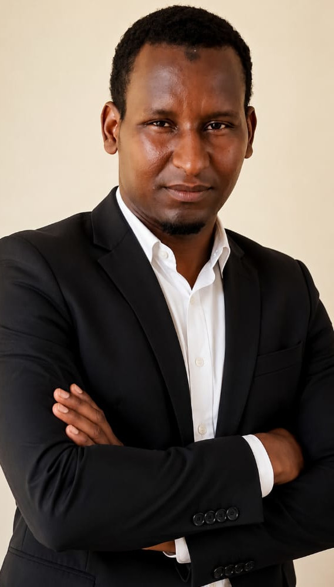

Applied linguist researching how English functions in multilingual African workplaces — building a scholarly bridge between language, communication, and social transformation.
Modibbo Adama University, Yola, Nigeria — originally from the Far North Region of Cameroon

I am Abdoulaye Daouda, a newly admitted Ph.D. Candidate in English for Specific Purposes at Modibbo Adama University, Yola. Originally from the Far North Region of Cameroon, I am deeply committed to academic excellence, linguistic research, and higher education development across Africa.
My academic journey is rooted in a passion for language, communication, and the role of English in multilingual workplaces in Cameroon. I strongly believe that language is not only a tool for communication but also a bridge for social transformation and intellectual empowerment.
"Language is not only a tool for communication —
it is a bridge for social transformation."
My research interests span the structures and social life of language — from theory to classroom to workplace.
Bridging linguistic theory and real-world language problems.
Language variation and use across social contexts and communities.
How meaning is constructed across spoken and written texts.
How learners internalize and develop a second language.
Technology-enabled approaches to language teaching and learning.
Language contact and coexistence in Cameroon's linguistic landscape.
Tailoring English instruction to professional and academic domains.
I have experience teaching English Language across two focus areas.
Listening, speaking, reading, and writing — taught as an integrated, communicative whole.
Preparing learners for the specific reading, writing, and discourse demands of academic study.
My multilingual background strengthens my academic perspective and enhances my understanding of cross-cultural communication.
My academic goal is to contribute meaningfully to linguistic research, policy development, and language education reform in Cameroon. I aspire to collaborate with international scholars and institutions in advancing research in Applied Linguistics and English Language Studies.
Analytical rigor, technical skill, and creativity — combined through both academic study and hands-on training, in person and online.
For academic collaboration, research discussion, or professional engagement, feel free to connect.